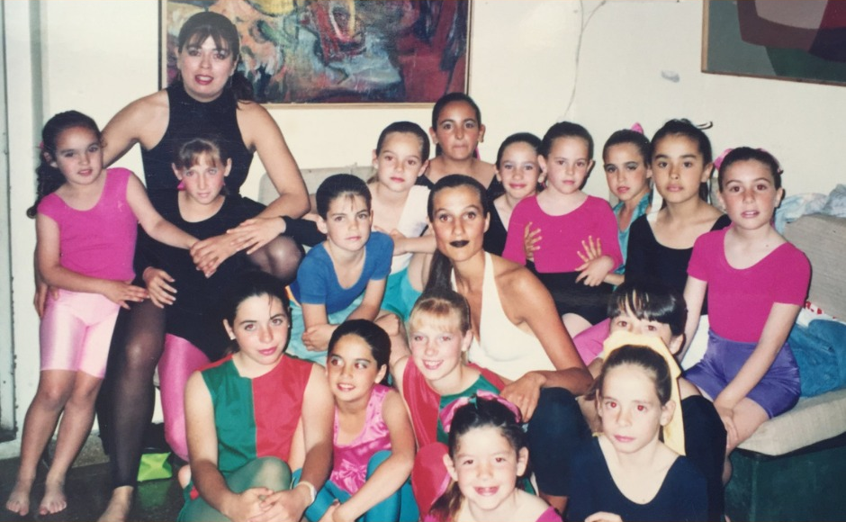
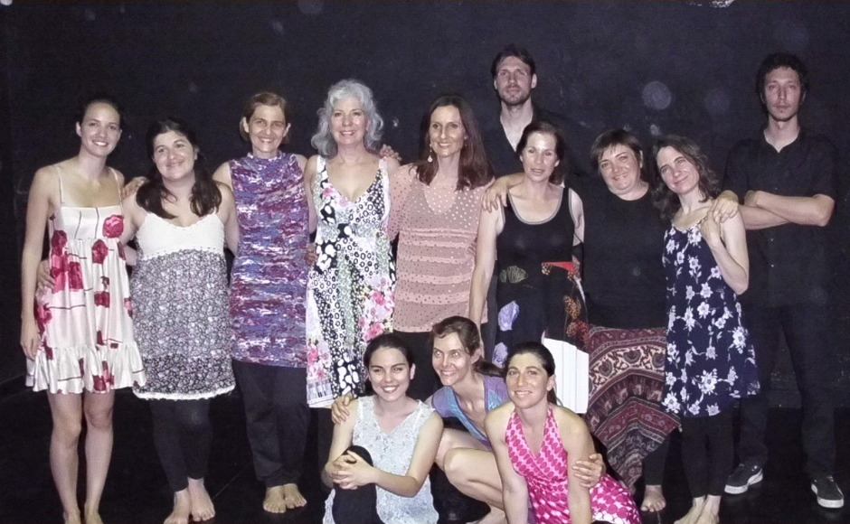
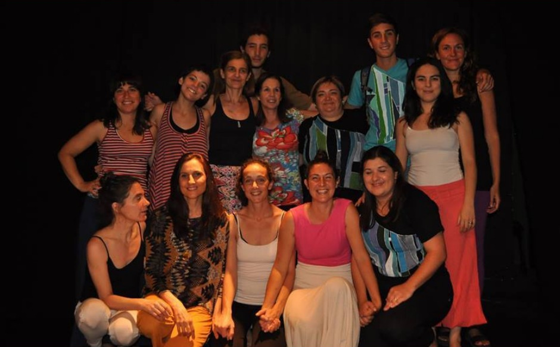
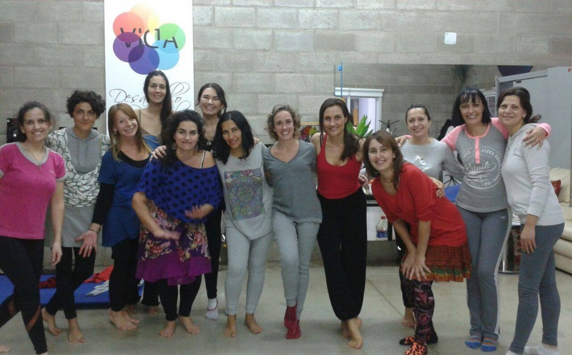
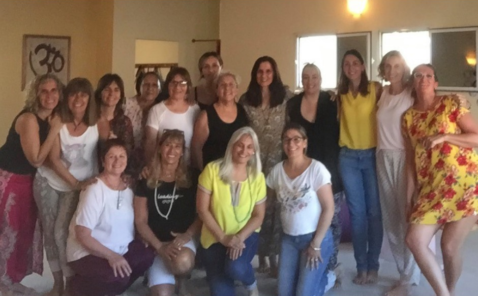
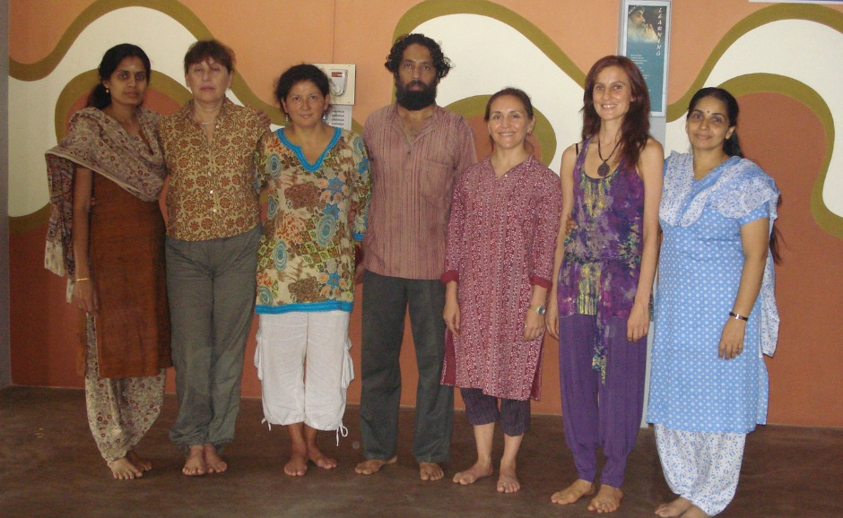
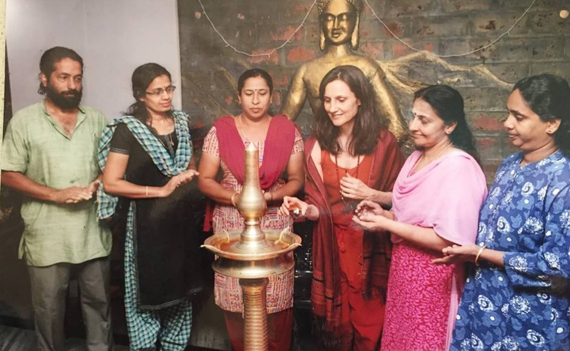
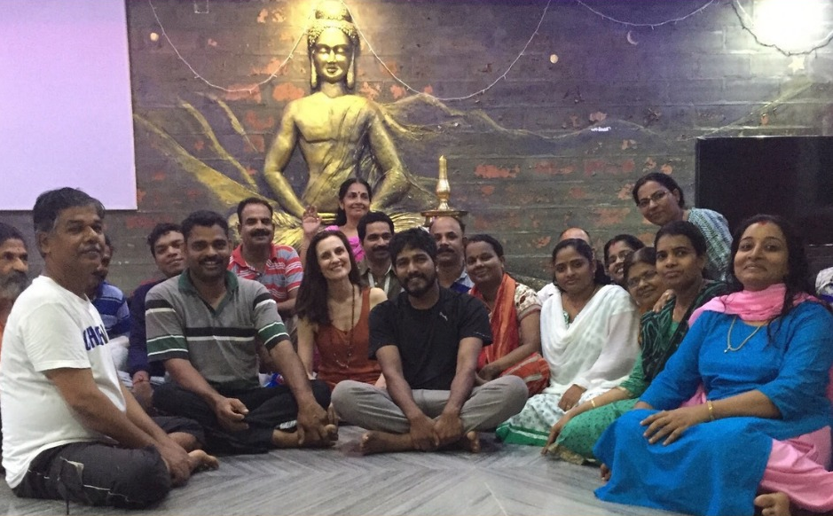

docencia
- Expresión Corporal, Casa de la Cultura de Laprida, 1987 a 1993.
- Trabajo Corporal para actores, Complejo Cultural de General Lamadrid, 1988.
- Técnica de la Danza y Danza Contemporánea, Teatro Municipal de Olavarría, 1989 a 1998.
- Expresión Corporal para docentes CIE -Centro de Investigaciones Educativas, Olavarría, 1993 y 1994.
- Expresión Corporal para músicos, Conservatorio Provincial de Música de Olavarría, 1995.
- Docente de las Jornadas de Educación por el Arte de Laprida, desde 2004 hasta 2012.
- Trabajo Corporal para cantantes, Escuela Municipal de Música de Olavarría ,2005.
- Taller de Trabajo Corporal Expresivo El Escorial, España, octubre de 2005.
- Expresión Primitiva, Primer Encuentro de las Artes, Pigué, 2008.
- Danza Contemporánea y Trabajo Corporal para actores, Casa de la Cultura de Laprida, 2009.
- Danza Experimental, Primeras Jornadas de Técnicas Corporales, Bahía Blanca, 2009.
- Trabajo Corporal para actores, Escuela Municipal de Teatro de Olavarría, 2005 a 2010.
- Danza Contemporánea, Escuela Municipal de Danzas de Olavarría, 2005 a 2010..
- Danza Experimental, Estudio Kalmar Stokoe, 2009-2010.
- Danza Experimental, Nueva Escuela de Danza de Haedo, 2010.
- Danza Experimental, Centro Cultural Borges, 2012- 2013.
- Expresión Primitiva, Estudio Kalmar Stokoe, 2014.
- “Mujeres que danzan” Casa de la Cultura de Laprida, 2013.
- “Mujeres que danzan” La Sala Blanca, Barcelona, 2014.
- “El Canto de la Danza, la Danza del Canto” junto a la cantante Silvina Sznajder, 2013, 2014.
- “Danza tu camino” Danza experimental y Danza de los cinco ritmos, junto a Nataraj Ma Deva, Jardín Paraíso 2013, 2014.
- “La Improvisación en la Danza”, junto a Marina Gubbay y Mariana Danani, Escuela de Danza Clásica de Bahia Blanca, 2014.
- Danza Teatro y Trabajo Corporal para Actores, Facultad de Artes de Unicen, Tandil 2014.
- Danza -Teatro, Escuela Municipal de Teatro de Olavarría, 2010 a 2015.
- Danza y Cuerpo, para profesionales de la danza, Escuela Municipal de Danza de Olavarría, 2015.
- Danza Experimental, Complejo Cultural de Gral Lamadrid, 2015.
- Talleres de Danza Teatro, y Danza Experimental Olavarría y Laprida 2016, 2017.
- Clases de Yoga y Tai Chi en Zen Life Ashram Chemanchery, Calicut, Kerala, India 2018.
- En el ámbito privado mantiene en actividad su taller desde 1987.







